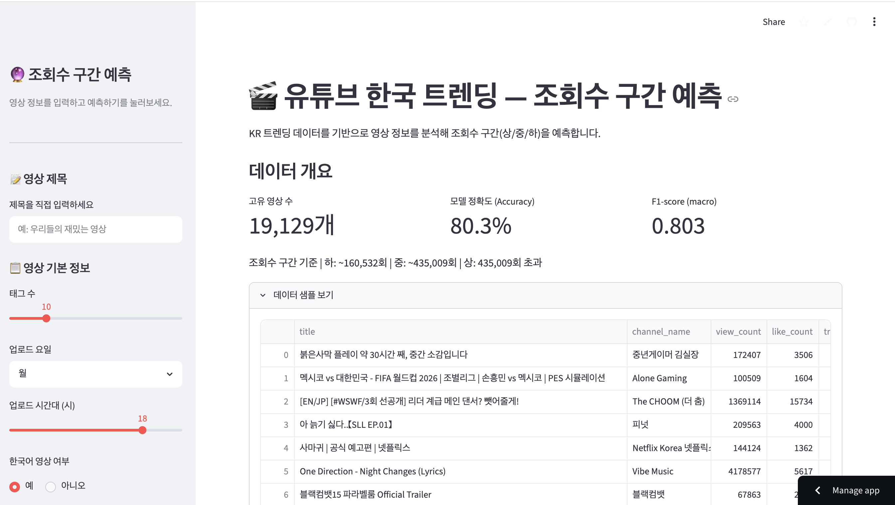
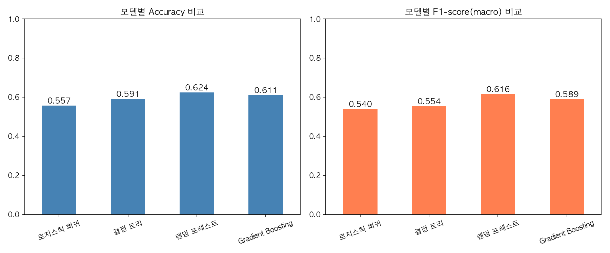
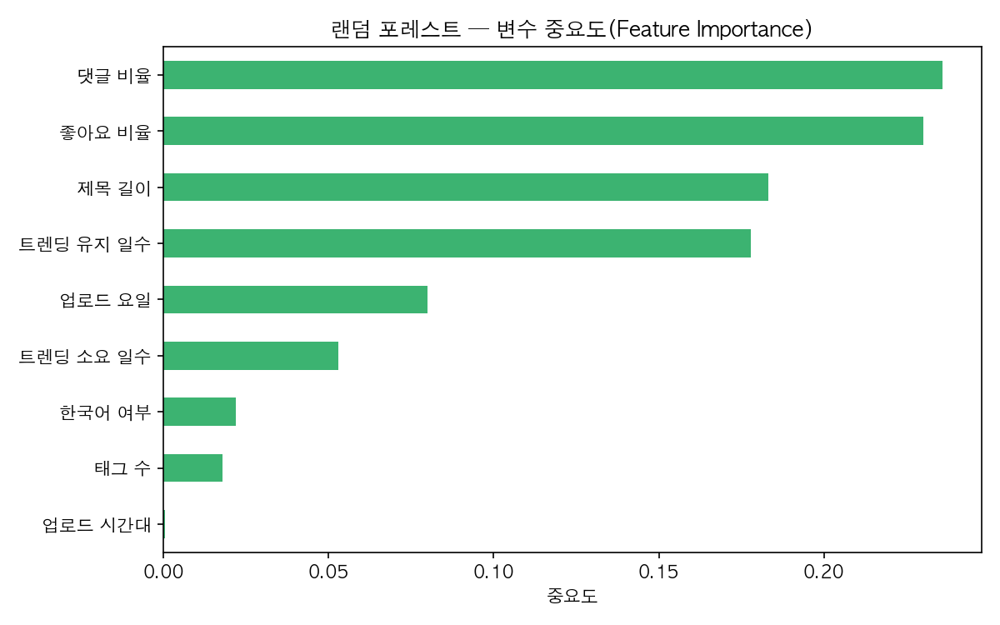

개요

Streamlit 기반 웹앱 — 영상 정보 입력 후 조회수 구간을 실시간 예측
Kaggle 글로벌 유튜브 트렌딩 데이터(113개국)에서 한국(KR) 데이터를 필터링해, 어떤 요소가 실제로 조회수를 결정하는지 데이터로 검증하고 영상 메타데이터만으로 조회수 구간을 분류하는 모델을 만들었습니다. 전처리·EDA·모델 비교·Streamlit 배포까지 전 과정을 혼자 진행했습니다.
성과
0.803
최종 Accuracy / F1 (GradientBoosting)
11
사용 피처 수
+24.6%p
베이스라인(로지스틱 회귀) 대비 개선
모델 성능 분석


구현 포인트
- 피처 엔지니어링 — 좋아요/댓글 비율, 트렌딩까지 소요 일수, 채널 평균 조회수(로그 변환) 등 11개 피처 설계
- 모델 비교 — 로지스틱 회귀·결정 트리·랜덤 포레스트·GradientBoosting을 비교해 최종 모델 선정
- 실시간 예측 웹앱 — Streamlit으로 영상 정보 입력 시 조회수 구간을 즉시 예측
모델 성능 비교
| 모델 | Accuracy | F1-score |
|---|---|---|
| 로지스틱 회귀 | 0.557 | 0.540 |
| 결정 트리 | 0.592 | 0.554 |
| 랜덤 포레스트 | 0.624 | 0.616 |
| GradientBoosting | 0.611 | 0.589 |
| 랜덤 포레스트(튜닝) | 0.636 | 0.626 |
| GradientBoosting(11피처, 최종) | 0.803 | 0.803 |
기술 스택
| 영역 | 사용 기술 |
|---|---|
| 언어 | Python |
| 모델링 | scikit-learn(GradientBoosting) |
| 데이터 처리 | pandas · numpy |
| 배포 | Streamlit |